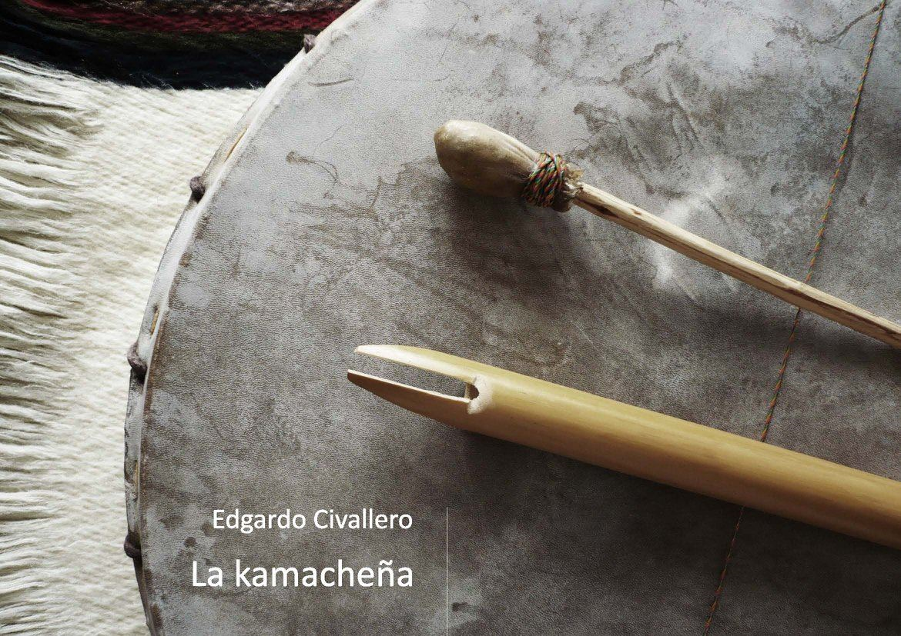

La kamacheña
Inicio > Libros digitales sobre música. Serie 1 > La kamacheña
Cómo citar este trabajo: Civallero, Edgardo (2025). La kamacheña. Edición de archivo. Bogotá: El Zorro de Abajo Editora.
Primera edición, 2014. Segunda edición, 2015. Edición revisada, 2021 (Wayrachaki Editora). Edición de archivo, 2025 (El Zorro de Abajo Editora).
Descargar en PDF.
Este libro ofrece un análisis histórico, organológico y etnográfico de una de las flautas más singulares y menos conocidas del ámbito andino-meridional. Basado en documentación bibliográfica, observaciones de campo y registros sonoros, el texto reconstruye la estructura y los usos de este aerófono tradicional, poniendo de relieve su especificidad técnica y su papel dentro del repertorio popular de las provincias argentinas de Jujuy y Salta, así como del sur boliviano.
La obra parte de una constatación: la kamacheña ha permanecido prácticamente invisible dentro de los estudios organológicos andinos. Su ámbito geográfico restringido, su repertorio poco difundido y las dificultades técnicas que presenta han contribuido a su condición de instrumento marginal y enigmático. Se describe la flauta como un tubo de caña cerrado por un nudo natural en el extremo distal y abierto en el proximal, donde se talla una embocadura sin canal de insuflación. En lugar del aeroducto característico de las flautas de pico, la kamacheña presenta una muesca semicircular flanqueada por dos aletas laterales que el intérprete introduce en la boca para asegurar la sujeción y orientar el soplo hacia el bisel. Esta particularidad estructural, única entre las flautas andinas, permite su ejecución con una sola mano, mientras la otra sostiene una caja, pequeño tambor de doble parche que acompaña rítmicamente la melodía.
El estudio detalla el contexto ritual y estacional del instrumento. La flauta aparece en festividades como la de San Roque (agosto), difuntos (noviembre) y carnavales (febrero-marzo). Su sonido marca las danzas de ronda o ruedas, donde una docena de bailarines giran en torno al flautista-percusionista, y acompaña también las coplas cantadas por mujeres y las tonadas o puntos instrumentales que reproducen sus melodías.
El libro amplía su análisis hacia las "flautillas chaqueñas", probablemente derivadas de la kamacheña, utilizadas por pueblos del Chaco austral —Qom, Pilagá, Chorote, Nivaklé y Wichi—, mostrando cómo el modelo técnico se difundió y diversificó. Estas variantes presentan mayor número de orificios y decoraciones abundantes, y aunque carecen de función ceremonial, conservan su condición de instrumento masculino y de uso recreativo.
El texto concluye que la vigencia de la kamacheña se mantiene en ámbitos rurales específicos, transmitida por tradición oral y práctica empírica. La ausencia de registros fonográficos y visuales, sumada al desinterés institucional, ha contribuido a su invisibilidad dentro del panorama musical sudamericano. Sin embargo, su persistencia en las manos de los músicos locales revela un sistema cultural resistente y coherente, en el que la música sigue siendo un lenguaje de identidad y pertenencia.